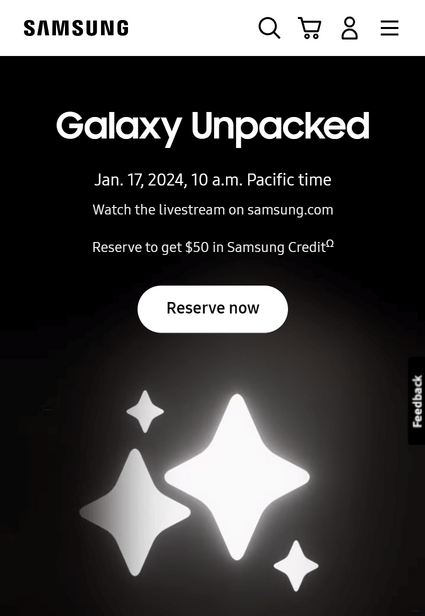

PARC: Contrast
Indian Motorcycle
indianmotorcycle.comIndian Motorcycles uses colors with great contrast consistly through their website. The contrast helps the website stay easy to read and navigate.
The screenshot above has good contrast that helps the image stand out against the rest of the page. Choosing a product with a different, but complimentry color, really helps the image pop.
White Space and Clean Design
Tandem Diabetes
tandemdiabetes.comTandem Diabetes does an excellent job of using white space on their website. They have a lot of important information to share for new and current users of their medical devices. The website uses enough white space to make it easy for users to find what they need without being overwhelmed with the amount of information available.
Visual Hierarchy
Samsung
samsung.com Samsungs website is a good example of Visual Hierarchy because they direct the user focus to important items, such as sales and new products, with a large slideshow at the beginging of the page.
At the very top they have simple icons for the navigation menu, search, account and cart. These icons are a clean way to provide quick access to important tools without being distracting from the more important and profitable items in the slideshow.